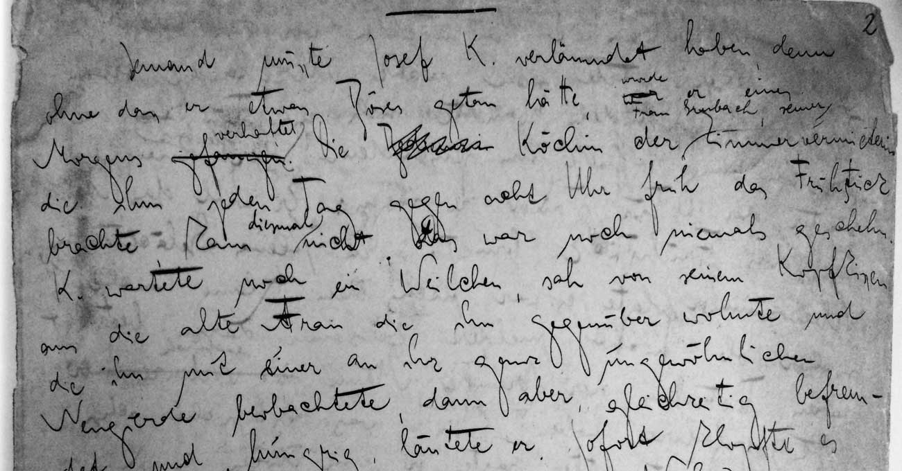
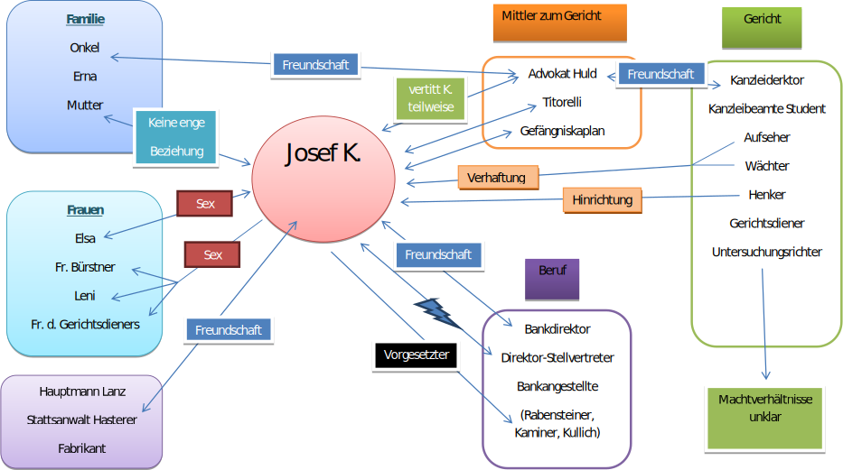

<!DOCTYPE html>
<html lang="en">
  <head>
    <meta charset="utf-8" />
    <meta name="viewport" content="width=device-width, initial-scale=1.0, maximum-scale=1.0, user-scalable=no" />

    <title></title>
    <link rel="stylesheet" href="dist/reveal.css" />
    <link rel="stylesheet" href="dist/theme/beige.css" id="theme" />
    <link rel="stylesheet" href="plugin/highlight/zenburn.css" />
	<link rel="stylesheet" href="css/layout.css" />
	<link rel="stylesheet" href="plugin/customcontrols/style.css">

	<link rel="stylesheet" href="plugin/reveal-pointer/pointer.css" />


    <script defer src="dist/fontawesome/all.min.js"></script>

	<script type="text/javascript">
		var forgetPop = true;
		function onPopState(event) {
			if(forgetPop){
				forgetPop = false;
			} else {
				parent.postMessage(event.target.location.href, "app://obsidian.md");
			}
        }
		window.onpopstate = onPopState;
		window.onmessage = event => {
			if(event.data == "reload"){
				window.document.location.reload();
			}
			forgetPop = true;
		}

		function fitElements(){
			const itemsToFit = document.getElementsByClassName('fitText');
			for (const item in itemsToFit) {
				if (Object.hasOwnProperty.call(itemsToFit, item)) {
					var element = itemsToFit[item];
					fitElement(element,1, 1000);
					element.classList.remove('fitText');
				}
			}
		}

		function fitElement(element, start, end){

			let size = (end + start) / 2;
			element.style.fontSize = `${size}px`;

			if(Math.abs(start - end) < 1){
				while(element.scrollHeight > element.offsetHeight){
					size--;
					element.style.fontSize = `${size}px`;
				}
				return;
			}

			if(element.scrollHeight > element.offsetHeight){
				fitElement(element, start, size);
			} else {
				fitElement(element, size, end);
			}		
		}


		document.onreadystatechange = () => {
			fitElements();
			if (document.readyState === 'complete') {
				if (window.location.href.indexOf("?export") != -1){
					parent.postMessage(event.target.location.href, "app://obsidian.md");
				}
				if (window.location.href.indexOf("print-pdf") != -1){
					let stateCheck = setInterval(() => {
						clearInterval(stateCheck);
						window.print();
					}, 250);
				}
			}
	};


        </script>
  </head>
  <body>
    <div class="reveal">
      <div class="slides"><section  data-markdown><script type="text/template"><!-- .slide: class="drop" -->
<div class="" style="position: absolute; left: 0px; top: 0px; height: 700px; width: 960px; min-height: 700px; display: flex; flex-direction: column; align-items: center; justify-content: center" absolute="true">

<!--
marp settings: marp, lang, theme  
obsidian-advanced-slides settings: theme, notesSeparator (<!-- notes in marp --\>)  
Note to myself: comment out NOTES for marp exports
-->

<style>
	.qr-code {
		  position: absolute;
		  top: 2rem;
		  right: 2rem;
	}

	.octicon--law-24 {
		  display: inline-block;
		  width: 1em;
		  height: 1em;
		  --svg: url("data:image/svg+xml,%3Csvg xmlns='http://www.w3.org/2000/svg' viewBox='0 0 24 24'%3E%3Cpath fill='%23000' d='M12.75 2.75V4.5h1.975c.351 0 .694.106.984.303l1.697 1.154c.041.028.09.043.14.043h4.102a.75.75 0 0 1 0 1.5H20.07l3.366 7.68a.749.749 0 0 1-.23.896c-.1.074-.203.143-.31.206a6.296 6.296 0 0 1-.79.399a7.349 7.349 0 0 1-2.856.569a7.343 7.343 0 0 1-2.855-.568a6.205 6.205 0 0 1-.79-.4a3.205 3.205 0 0 1-.307-.202l-.005-.004a.749.749 0 0 1-.23-.896l3.368-7.68h-.886c-.351 0-.694-.106-.984-.303l-1.697-1.154a.246.246 0 0 0-.14-.043H12.75v14.5h4.487a.75.75 0 0 1 0 1.5H6.763a.75.75 0 0 1 0-1.5h4.487V6H9.275a.249.249 0 0 0-.14.043L7.439 7.197c-.29.197-.633.303-.984.303h-.886l3.368 7.68a.75.75 0 0 1-.209.878c-.08.065-.16.126-.31.223a6.077 6.077 0 0 1-.792.433a6.924 6.924 0 0 1-2.876.62a6.913 6.913 0 0 1-2.876-.62a6.077 6.077 0 0 1-.792-.433a3.483 3.483 0 0 1-.309-.221a.762.762 0 0 1-.21-.88L3.93 7.5H2.353a.75.75 0 0 1 0-1.5h4.102c.05 0 .099-.015.141-.043l1.695-1.154c.29-.198.634-.303.985-.303h1.974V2.75a.75.75 0 0 1 1.5 0M2.193 15.198a5.414 5.414 0 0 0 2.557.635a5.414 5.414 0 0 0 2.557-.635L4.75 9.368Zm14.51-.024c.082.04.174.083.275.126c.53.223 1.305.45 2.272.45a5.847 5.847 0 0 0 2.547-.576L19.25 9.367Z'/%3E%3C/svg%3E");
		  background-color: currentColor;
		  -webkit-mask-image: var(--svg);
		  mask-image: var(--svg);
		  -webkit-mask-repeat: no-repeat;
		  mask-repeat: no-repeat;
		  -webkit-mask-size: 100% 100%;
		  mask-size: 100% 100%;
	}

	.material-symbols--star {
		  display: inline-block;
		  width: 1em;
		  height: 1em;
		  --svg: url("data:image/svg+xml,%3Csvg xmlns='http://www.w3.org/2000/svg' viewBox='0 0 24 24'%3E%3Cpath fill='%23000' d='m5.825 22l1.625-7.025L2 10.25l7.2-.625L12 3l2.8 6.625l7.2.625l-5.45 4.725L18.175 22L12 18.275z'/%3E%3C/svg%3E");
		  background-color: currentColor;
		  -webkit-mask-image: var(--svg);
		  mask-image: var(--svg);
		  -webkit-mask-repeat: no-repeat;
		  mask-repeat: no-repeat;
		  -webkit-mask-size: 100% 100%;
		  mask-size: 100% 100%;
	}
	
	.material-symbols--star-outline {
		  display: inline-block;
		  width: 1em;
		  height: 1em;
		  --svg: url("data:image/svg+xml,%3Csvg xmlns='http://www.w3.org/2000/svg' viewBox='0 0 24 24'%3E%3Cpath fill='%23000' d='m8.85 17.825l3.15-1.9l3.15 1.925l-.825-3.6l2.775-2.4l-3.65-.325l-1.45-3.4l-1.45 3.375l-3.65.325l2.775 2.425zM5.825 22l1.625-7.025L2 10.25l7.2-.625L12 3l2.8 6.625l7.2.625l-5.45 4.725L18.175 22L12 18.275zM12 13.25'/%3E%3C/svg%3E");
		  background-color: currentColor;
		  -webkit-mask-image: var(--svg);
		  mask-image: var(--svg);
		  -webkit-mask-repeat: no-repeat;
		  mask-repeat: no-repeat;
		  -webkit-mask-size: 100% 100%;
		  mask-size: 100% 100%;
	}

	.material-symbols--star-half-outline {
		  display: inline-block;
		  width: 1em;
		  height: 1em;
		  --svg: url("data:image/svg+xml,%3Csvg xmlns='http://www.w3.org/2000/svg' viewBox='0 0 24 24'%3E%3Cpath fill='%23000' d='m12 15.925l3.15 1.925l-.825-3.6l2.775-2.4l-3.65-.325l-1.45-3.4zM5.825 22l1.625-7.025L2 10.25l7.2-.625L12 3l2.8 6.625l7.2.625l-5.45 4.725L18.175 22L12 18.275z'/%3E%3C/svg%3E");
		  background-color: currentColor;
		  -webkit-mask-image: var(--svg);
		  mask-image: var(--svg);
		  -webkit-mask-repeat: no-repeat;
		  mask-repeat: no-repeat;
		  -webkit-mask-size: 100% 100%;
		  mask-size: 100% 100%;
	}
</style>

# Der Process

> Franz Kafka


</div>

<aside class="notes"><p>Der Process - von Franz Kafka</p>
</aside></script></section><section  data-markdown><script type="text/template"><!-- .slide: class="drop" -->
<div class="" style="position: absolute; left: 0px; top: 0px; height: 700px; width: 960px; min-height: 700px; display: flex; flex-direction: column; align-items: center; justify-content: center" absolute="true">

# Franz Kafka

* geboren am 3.7.1883 in Prag <!-- .element: class="fragment" -->
* gestorben am 3.6.1924 in Klosterneuburg, Kierling <!-- .element: class="fragment" -->
* Religion: Judentum <!-- .element: class="fragment" -->
* Ausbildung: u.a. Jurastudium <!-- .element: class="fragment" -->
* Beruf: Versicherungsangestellter <!-- .element: class="fragment" -->
* Vater: dominant <!-- .element: class="fragment" -->
</div>

<aside class="notes"><p>Franz Kafka erblickt am 3.7.1883 in Prag das Licht der Welt.  </p>
<p>Leben:  </p>
<ul>
<li><strong>1883</strong>: Geburt in Prag als erstes Kind von Hermann Kafka und Julie Kafka, geb. Löwy.</li>
<li><strong>1885-1892</strong>: Geburt von Geschwistern und Schulbesuch.</li>
<li><strong>1901</strong>: Beginn des Jura-Studiums an der Prager Deutschen Universität.</li>
<li><strong>1906-1907</strong>: Arbeit bei Versicherungsgesellschaften und erste literarische Veröffentlichungen.</li>
<li><strong>1910-1913</strong>: Reisen nach Paris, in die Schweiz und intensive Schreibphase, darunter &quot;Der Verschollene&quot; und &quot;Die Verwandlung&quot;.</li>
<li><strong>1914-1918</strong>: Erste Verlobung, Krankheiten, Arbeit am &quot;Prozess&quot; und Auswirkungen des Ersten Weltkriegs. (Einstufung &quot;<em>unverzichtbar</em>&quot;, von seinem Arbeitgeber, deshalb blieb er Zuhause)</li>
<li><strong>1919-1922</strong>: Wechselnde Beziehungen, gesundheitliche Probleme und intensive Schreibphasen.</li>
<li><strong>1923-1924</strong>: Umzug nach Berlin, Verschlechterung seines Gesundheitszustands und Tod am 3. Juni 1924 in Kierling bei Klosterneuburg.</li>
</ul>
<p>Kafka hinterließ ein bedeutendes literarisches Erbe, das vor allem durch seine einzigartige Herangehensweise an existenzielle Themen und seine künstlerische Darstellung von Macht, Identität und Isolation geprägt ist.</p>
<p>Im Alter von 40 Jahren verstarb er schlussendlich am 3.6.1924 in Klosterneuburg - Kierling, in Österreich</p>
<p><a href="https://www.franzkafka.de/leben/chronik">https://www.franzkafka.de/leben/chronik</a>
<a href="https://www.franzkafka.de/leben/familie">https://www.franzkafka.de/leben/familie</a>
<a href="https://www.franzkafka.de/leben/frauen">https://www.franzkafka.de/leben/frauen</a>
<a href="https://www.franzkafka.de/leben/freunde">https://www.franzkafka.de/leben/freunde</a></p>
</aside></script></section><section  data-markdown><script type="text/template"><!-- .slide: class="drop" -->
<div class="" style="position: absolute; left: 0px; top: 0px; height: 700px; width: 960px; min-height: 700px; display: flex; flex-direction: column; align-items: center; justify-content: center" absolute="true">

# Der Process

* Startschuss: Sommer 1914 <!-- .element: class="fragment" -->
	* er schreibt den Beginn und den Schluss <!-- .element: class="fragment" -->
* mehrere Kapitel gleichzeitig <!-- .element: class="fragment" -->
* Arbeit stockt im November <!-- .element: class="fragment" -->
* Arbeit verworfen im Januar 1915 <!-- .element: class="fragment" -->
* Manuskriptlänge: 171 Seiten <!-- .element: class="fragment" -->
* Max Brod, ein Freund von Kafka veröffentlichte das unvollendete Werk schließlich gegen den letzten Willen von Kafka <!-- .element: class="fragment" -->
</div>

<aside class="notes"><ul>
<li>ab dem Sommer 1914 arbeitete Kafka an dem Buch<ul>
<li>er schreibt den Beginn und den Schluss</li>
</ul>
</li>
<li>anschließend arbeitet er an mehreren Kapiteln gleichzeitig</li>
<li>im November stockt die Arbeit</li>
<li>im Januar 1915 legt er es schließlich ganz beiseite</li>
<li>das Manuskript umfasst schlussendlich 171 Blätter</li>
<li>Max Brod, ein Freund von Kafka veröffentlichte das unvollendete Werk schließlich gegen den letzten Willen von Kafka, der in gebeten hatte alle Tagebücher, Manuskripte und Briefe von ihm restlos zu verbrennen nur acht Monate nachdem Kafka an Kehlkopftuberkulose starb.</li>
</ul>
<p>Das Buch gilt als Kafkas Hauptwerk<br>und ist sein weltweit bekanntestes, meistzitiertes Werk.</p>
<p>Es gab einige Schwierigkeiten bei der Publikation, da die Kapitel zwar als solche markiert waren, aber die Reihenfolge nicht festgelegt wurde.<br>Zudem gibt es einige unvollständige Kapitel.</p>
</aside></script></section><section  data-markdown><script type="text/template"><!-- .slide: class="drop" -->
<div class="" style="position: absolute; left: 0px; top: 0px; height: 700px; width: 960px; min-height: 700px; display: flex; flex-direction: column; align-items: center; justify-content: center" absolute="true">

# Fakten zum Buch

* Titel: Der Process <!-- .element: class="fragment" -->
* Textgattung: Roman <!-- .element: class="fragment" -->
* Literarische Strömung: Keine, oder Modernismus mit Elementen des Absurdismus, Expressionismus und Existentialismus (je nachdem wen man fragt) <!-- .element: class="fragment" -->
* Erzählperspektive: personaler Erzähler <!-- .element: class="fragment" -->
</div>

<aside class="notes"><p><strong>Ein hellseherisches Jahrhundertwerk</strong> (<em>Einleitung in die Interpretation</em>)<br>Was macht den &quot;Prozess&quot; zu einem solchen Urwerk der Moderne? Seit bald hundert Jahren ist der Text immer wieder neu und immer wieder anders interpretiert worden, theologisch, existentialistisch, psychoanalytisch. Gibt es ein oberstes Gesetz? Gibt es das Böse, oder eine immanente menschliche Schuld? Ein Vergehen am eigenen Leben, indem man es falsch führt? Oder ist Kafkas Niederschrift in erster Linie eine subtile Kritik an bürokratischer Macht und Herrschaftsstrukturen?</p>
<p>Stil: Seit Beda Allemann als <em>hypothetischer Erzählstil</em> bekannt. (<a href="https://wortwuchs.net/werke/der-prozess/#form_und_sprache">https://wortwuchs.net/werke/der-prozess/#form_und_sprache</a>)</p>
</aside></script></section><section  data-markdown><script type="text/template"><!-- .slide: class="drop" -->
<div class="" style="position: absolute; left: 0px; top: 0px; height: 700px; width: 960px; min-height: 700px; display: flex; flex-direction: column; align-items: center; justify-content: center" absolute="true">

# Interpretation

<div class="block">

<!-- .element: class="fragment" -->
* tiefgründige Untersuchung der Bürokratie und der Macht Strukturen von Gerichten 
	1. undurchsichtiger Prozess <!-- .element: class="fragment" -->
	2. Bürokratische Hölle <!-- .element: class="fragment" -->
	3. Korruption und Machtverhältnisse <!-- .element: class="fragment" -->
	4. Frustration durch unbesiegbare Ankläger <!-- .element: class="fragment" -->
</div>
</div>

<aside class="notes"><p>“Der Process” ist eine tiefgründige Untersuchung der Bürokratie und der Macht Strukturen von Gerichten. Es zeigt die Frustration und das Leiden, die durch ein undurchsichtiges und unergründliches Rechtssystem verursacht werden. Josef K.&#39;s ständige Unfähigkeit, seine Erfahrungen zu verarbeiten, führt zu einem Erlebnis von übermäßigem, “sinnlosem” Leiden: Seine Suche ist von dem Bedürfnis getrieben, seine Verfolgung bedeutungsvoll zu machen, sein Leiden zu meistern. Die Ironie und der absurde Humor des Romans entstehen aus der Frustration, nicht zu wissen, warum er all dies ertragen muss.</p>
</aside></script></section><section  data-markdown><script type="text/template"><!-- .slide: class="drop" -->
<div class="" style="position: absolute; left: 0px; top: 0px; height: 700px; width: 960px; min-height: 700px; display: flex; flex-direction: column; align-items: center; justify-content: center" absolute="true">

# Stoff

* biografischer Anlass: Auflösung der Verlobung mit Felice Bauer <!-- .element: class="fragment" -->
* Kafkas kämpfe mit <!-- .element: class="fragment" -->
	* Identität <!-- .element: class="fragment" -->
	* Gesellschaft <!-- .element: class="fragment" -->
* totalitär regierte Staaten <!-- .element: class="fragment" -->
* erster Weltkrieg <!-- .element: class="fragment" -->
* Traum von einer Schriftstellerexistenz <!-- .element: class="fragment" -->
</div>

<aside class="notes"><p><em>Der Process</em> gehört zu denjenigen Werken Kafkas, bei denen sich ein unmittelbarer biografischer Anlass nachweisen lässt: die Auflösung der Verlobung mit <a href="https://www.franzkafka.de/leben/frauen/felice-bauer">Felice Bauer</a>. Kafka hat diese Trennung vor allem deshalb als traumatisch erlebt, weil sie sich in Anwesenheit zweier Zeuginnen abspielte, die ihm im Hotel ›Askanischer Hof‹ in Berlin wie Geschworene gegenüber saßen. Dass sich hier dem Juristen Kafka die Metaphorik des Gerichts aufdrängte, ist naheliegend.</p>
<p>“Der Process” spiegelt zudem Kafkas eigene Kämpfe mit Identität und Gesellschaft wider.</p>
<p>Auch Selbstentfremdung, Vernichtungsängste, Desorientierung, Anonymität und die aktenmäßige ›Erfassung‹ des Menschen. Vor allem Kafkas Verfahren, das jeweils Nächstliegende mit fotografischer Genauigkeit zu schildern, den Sinn des Ganzen jedoch völlig im Dunkeln zu lassen, spiegelt genau das Lebensgefühl in großen sozialen Systemen, in denen jeder ›informiert‹ ist, die jedoch jenseits des eigenen Funktionierens keinen ›Sinn‹ mehr vermitteln.</p>
<p><strong>Autobiografische Ähnlichkeiten</strong>
Es gibt durchaus auch biografische Parallelen zwischen Autor und Figur. Als er die ersten Zeilen seines Romanfragments schrieb, war Kafka schon seit sechs Jahren bei der &quot;Arbeiter-Unfall-Versicherungs-Anstalt für das Königreich Böhmen in Prag&quot; angestellt. Vom Kriegsdienst wird er zurückgestellt, seine Vorgesetzten halten ihn für unentbehrlich. Noch bis 1922 bleibt er Büroangestellter, das gibt ihm nicht nur materiell, sondern auch psychisch Sicherheit. Denn als Schriftsteller hielt er sich immer wieder für einen Versager. Bei den Frauen hat Kafka dagegen durchaus Erfolg. Sie locken ihn oft, schreibt er an seinen Freund Max Brod. Gemeinsam mit ihm besucht er auch öfters Bordelle und trifft junge Frauen, &quot;Ladenmädchen&quot;, wie er sie nennt.</p>
<p>Auch der Bankangestellte Joseph K. hat ein geregeltes Leben. Er wohnt in der Pension einer Frau Grubach, ist ganz auf seine Arbeit konzentriert. Einmal in der Woche besucht er Else, die Kellnerin in einer Weinstube, nach ihrem Dienst - dann kommt er spät nach Hause. Seine Freizeit verbringt er mit Spaziergängen und mit anderen Honoratioren am Stammtisch.</p>
</aside></script></section><section  data-markdown><script type="text/template"><!-- .slide: class="drop" -->
<div class="" style="position: absolute; left: 0px; top: 0px; height: 700px; width: 960px; min-height: 700px; display: flex; flex-direction: column; align-items: center; justify-content: center" absolute="true">

# Hintergrund
## Soziokulturell/Biografisch

- Beamter im Arbeiterunfallversicherungsinstitut <!-- .element: class="fragment" -->
- tschechischer Bürger im österreichisch-ungarischen Reich. <!-- .element: class="fragment" -->
- Persönliche Entfremdung <!-- .element: class="fragment" -->
- Literatur vs. bürgerlichem Leben. <!-- .element: class="fragment" -->
- Tod durch Tuberkulose. <!-- .element: class="fragment" -->
</div>

<aside class="notes"><ul>
<li>Kafka war Beamter im Arbeiterunfallversicherungsinstitut für das Königreich Böhmen.</li>
<li>Er war ein tschechischer Bürger im österreichisch-ungarischen Reich.</li>
<li>Persönliche Entfremdung von seinem pragmatischen Vater, seiner Arbeit und vom anderen Geschlecht.</li>
<li>Hin- und hergerissen zwischen Literatur und bürgerlichem Leben.</li>
<li>Starb 1924 im Alter von 41 Jahren an Tuberkulose.</li>
</ul>
<p><strong>Biographische Entstehungsbedingungen</strong>:<br>Franz Kafka schrieb “Der Process” während seiner Zeit als Beamter im Arbeiterunfallversicherungsinstitut für das Königreich Böhmen. Er war ein tschechischer Bürger im österreichisch-ungarischen Reich, ein Deutschsprecher unter Tschechen, ein Jude unter Deutschsprechern und ein Ungläubiger unter Juden. Er fühlte sich von seinem pragmatischen und herrschsüchtigen Vater, von seiner bürokratischen Arbeit und vom anderen Geschlecht entfremdet. Er war hin- und hergerissen zwischen dem Wunsch, in der Literatur zu leben, und dem Wunsch, ein normales bürgerliches Leben zu führen. Diese persönlichen Erfahrungen und seine scharfe Kritik an der Bürokratie seiner Zeit spiegeln sich in “Der Process” wider. Kafka starb 1924 im Alter von 41 Jahren an Tuberkulose.</p>
</aside></script></section><section  data-markdown><script type="text/template"><!-- .slide: class="drop" -->
<div class="" style="position: absolute; left: 0px; top: 0px; height: 700px; width: 960px; min-height: 700px; display: flex; flex-direction: column; align-items: center; justify-content: center" absolute="true">

# Hintergrund
## Soziokulturell/Historisch

- entstand während des Ersten Weltkriegs. <!-- .element: class="fragment" -->
- Nationalismus und Feindseligkeit im österreichisch-ungarischen Reich. <!-- .element: class="fragment" -->
- Konflikte zwischen drei Hauptbevölkerungsgruppen: den Tschechen, den Deutsch-Österreichern und den Juden. <!-- .element: class="fragment" -->
</div>

<aside class="notes"><ul>
<li>&quot;Der Process&quot; entstand während des Ersten Weltkriegs.</li>
<li>Nationalismus und Feindseligkeit im österreichisch-ungarischen Reich.</li>
<li>Konflikte zwischen drei Hauptbevölkerungsgruppen: den Tschechen, den Deutsch-Österreichern und den Juden.</li>
<li></li>
</ul>
<p><strong>Historische Entstehungsbedingungen</strong>:<br>Kafka schrieb das Buch während des Ersten Weltkriegs, einer Zeit großer politischer und sozialer Umwälzungen. Während seiner prägenden Jahre war der Nationalismus (ein Verlangen nach Unabhängigkeit und Selbstkontrolle entlang ethnischer oder nationaler Linien) im gesamten österreichisch-ungarischen Reich auf dem Vormarsch, was zur Feindseligkeit führte, die in den Ersten Weltkrieg mündete, als Franz Ferdinand, der Thronfolger des österreichisch-ungarischen Throns, 1914 ermordet wurde. Es ist wichtig zu beachten, dass Kafka das Buch während des Ersten Weltkriegs schrieb, einer Zeit großer politischer und sozialer Umwälzungen. Obwohl es keine direkte Zensur gab, kann man in “Der Process” eine satirische Anprangerung der österreichisch-ungarischen Bürokratie von Kafkas Zeit sehen.</p>
</aside></script></section><section  data-markdown><script type="text/template"><!-- .slide: class="drop" -->
<div class="" style="position: absolute; left: 0px; top: 0px; height: 700px; width: 960px; min-height: 700px; display: flex; flex-direction: column; align-items: center; justify-content: center" absolute="true">

# Motive

1. Gerechtigkeit gegen das Gesetz <!-- .element: class="fragment" -->
2. Das Absurde <!-- .element: class="fragment" -->
3. Das Unbekannte und Interpretation <!-- .element: class="fragment" -->
4. Entfremdung und Kontrolle <!-- .element: class="fragment" -->
5. Sex und Verführung <!-- .element: class="fragment" -->
</div>

<aside class="notes"><ol>
<li><strong>Gerechtigkeit gegen das Gesetz</strong>: Der zentrale Konflikt von “Der Process” ist Josef K.&#39;s Kampf gegen das Gesetz. Er steht wegen eines unbekannten Verbrechens vor Gericht, und sein Prozess soll angeblich dazu dienen, Gerechtigkeit zu gewährleisten. Allerdings scheint es wenig Gerechtigkeit in der Behandlung zu geben, die Josef erhält.</li>
<li><strong>Das Absurde</strong>: Das Gesetz in “Der Process” ist irrational, unverständlich und daher absurd. Je mehr Josef K. versucht, seinen Fall rational zu verfolgen, desto mehr verstrickt er sich in Irrationalität.</li>
<li><strong>Das Unbekannte und Interpretation</strong>: Die fundamentale Absurdität von Josef K.&#39;s Welt ist eine Folge ihrer Unergründlichkeit: Es gibt keine entscheidende Möglichkeit, Sinn aus Josefs Situation zu machen.</li>
<li><strong>Entfremdung und Kontrolle</strong>: Es gibt keine Zusammenarbeit oder Kameradschaft in &quot;Der Process&quot;. Jeder Einzelne handelt als isolierter Agent, und die Menschen konzentrieren sich darauf, sich selbst und andere zu kontrollieren, um persönliche Wünsche zu erfüllen.</li>
<li><strong>Sex und Verführung</strong>: “Der Process” ist voll von offener Sexualität. Ein großer Teil der weiblichen Charaktere, wie Leni, versucht, Josef zu verführen oder wird von ihm als potenzielle sexuelle Eroberungen betrachtet.</li>
</ol>
</aside></script></section><section  data-markdown><script type="text/template"><!-- .slide: class="drop" -->
<div class="" style="position: absolute; left: 0px; top: 0px; height: 700px; width: 960px; min-height: 700px; display: flex; flex-direction: column; align-items: center; justify-content: center" absolute="true">

# (Zeit)Verlauf

- Zeit: vermutlich in den frühen 1900er Jahren (nicht explizit genannt) <!-- .element: class="fragment" -->
- Zeitverlauf: <!-- .element: class="fragment" -->
	* Erzählte Zeit: Geburtstag - Tod Joseph K.'s (etwa ein Jahr später) <!-- .element: class="fragment" -->
	* Erzählzeit: etwa 8,5h <!-- .element: class="fragment" -->
</div>

<aside class="notes"><ul>
<li>Zeit: vermutlich in den frühen 1900er Jahren (nicht explizit genannt)</li>
<li>Zeitverlauf: <ul>
<li>Erzählte Zeit: Geburtstag - Tod Joseph K.&#39;s (etwa ein Jahr später)</li>
<li>Erzählzeit: etwa 8,5h</li>
<li>Auffälligkeiten: chronologisch, bis auf die Fragmente</li>
</ul>
</li>
</ul>
</aside></script></section><section  data-markdown><script type="text/template"><!-- .slide: class="drop" -->
<div class="" style="position: absolute; left: 0px; top: 0px; height: 700px; width: 960px; min-height: 700px; display: flex; flex-direction: column; align-items: center; justify-content: center" absolute="true">

# Raum und Milieu

- Raum: <!-- .element: class="fragment" -->
	- K.'s Pension, <!-- .element: class="fragment" -->
	- Gerichtsbüros, <!-- .element: class="fragment" -->
	- Bank, <!-- .element: class="fragment" -->
	- Advokaten Wohnung, <!-- .element: class="fragment" -->
	- Maler Atelier & Dom <!-- .element: class="fragment" -->
- Milieu: <!-- .element: class="fragment" -->
	- obere Mittelklasse <!-- .element: class="fragment" -->
	- armen Viertel <!-- .element: class="fragment" -->
</div>

<aside class="notes"><p>Schauplätze sind der private und berufliche Lebensbereich Josef K.’s sowie die Örtlichkeiten, an die er durch seine »Prozesssituation« zu gehen veranlasst wird</p>
<ul>
<li>Raum: Stadt in Mitteleuropa, vielleicht Prag<ul>
<li>K.&#39;s Pension</li>
<li>Gerichtsbüros (Sitzungssaal, Kanzleien)</li>
<li>Bank</li>
<li>Maler Atelier (Titorelli)</li>
<li>Dom (Priester)</li>
<li>Advokaten Wohnung (Huld)</li>
</ul>
</li>
<li>Milieu: <ul>
<li>moderne Bürokratische Stadt, obere Mittelklasse</li>
<li>die Gerichtsräumlichkeiten sind paradoxerweise in einem armen Viertel</li>
</ul>
</li>
</ul>
</aside></script></section><section  data-markdown><script type="text/template"><!-- .slide: class="drop" -->
<div class="" style="position: absolute; left: 0px; top: 0px; height: 700px; width: 960px; min-height: 700px; display: flex; flex-direction: column; align-items: center; justify-content: center" absolute="true">

# Sprache

- Sprache: <!-- .element: class="fragment" -->
	- präzise, nüchtern, sachlich, unbeteiligt, aber nicht emotionslos <!-- .element: class="fragment" -->
	- keine "schwierigen" Wörter, nur ein paar ältere Bezeichnungen <!-- .element: class="fragment" -->
	- monoperspektivisches, personales Erzählen <!-- .element: class="fragment" -->
</div>

<aside class="notes"><ul>
<li>Sprache: <ul>
<li>präzise, aber nicht emotionslos</li>
<li>keine &quot;schwierigen&quot; Wörter, nur ein paar ältere Bezeichnungen, </li>
<li>vermittelt ein Gefühl von Hoffnungslosigkeit</li>
</ul>
</li>
</ul>
</aside></script></section><section  data-markdown><script type="text/template"><!-- .slide: class="drop" -->
<div class="" style="position: absolute; left: 0px; top: 0px; height: 700px; width: 960px; min-height: 700px; display: flex; flex-direction: column; align-items: center; justify-content: center" absolute="true">

# Figurencharakteristik

* Josef K.: <!-- .element: class="fragment" -->
	* Karrierebeamter, Standesdünkel, <!-- .element: class="fragment" -->
	* selbstzufrieden, überheblich <!-- .element: class="fragment" -->
* Advokat Huld: <!-- .element: class="fragment" -->
	* alt, krank, <!-- .element: class="fragment" -->
	* dominant <!-- .element: class="fragment" -->
* Leni: <!-- .element: class="fragment" -->
	* dominant, <!-- .element: class="fragment" -->
	* sexuell-animalisch <!-- .element: class="fragment" -->
</div></script></section><section  data-markdown><script type="text/template"><!-- .slide: class="drop" -->
<div class="" style="position: absolute; left: 0px; top: 0px; height: 700px; width: 960px; min-height: 700px; display: flex; flex-direction: column; align-items: center; justify-content: center" absolute="true">

# Figurencharakteristik

- Frau Grubach: <!-- .element: class="fragment" -->
	- einfach, mütterlich, <!-- .element: class="fragment" -->
	- vorwitzig <!-- .element: class="fragment" -->
- Fräulein Bürstner: <!-- .element: class="fragment" -->
	- selbstbewusst, modern, <!-- .element: class="fragment" -->
	- emanzipiert <!-- .element: class="fragment" -->
- Maler Titorelli: <!-- .element: class="fragment" -->
	- Bohemien, Lebenskünstler, <!-- .element: class="fragment" -->
	- geschickter Taktierer <!-- .element: class="fragment" -->
</div>

<aside class="notes"><p>Weitere Personen: </p>
<ul>
<li>Gefängniskaplan (Dom),</li>
<li>Elsa (Freundin)</li>
<li>Josefs Onkel</li>
</ul>
</aside></script></section><section  data-markdown><script type="text/template"><!-- .slide: class="drop" -->
<div class="" style="position: absolute; left: 0px; top: 0px; height: 700px; width: 960px; min-height: 700px; display: flex; flex-direction: column; align-items: center; justify-content: center" absolute="true">

# Figurenkonstellation


</div></script></section><section  data-markdown><script type="text/template"><!-- .slide: class="drop" -->
<div class="" style="position: absolute; left: 0px; top: 0px; height: 700px; width: 960px; min-height: 700px; display: flex; flex-direction: column; align-items: center; justify-content: center" absolute="true">

# Inhaltsangabe

> _"Jemand musste Joseph K. verleumdet haben, denn ohne daß er etwas Böses getan hätte, wurde er eines Morgens verhaftet."_
</div>

<aside class="notes"><p>Dieser Satz gehört zu den berühmtesten Romananfängen der Weltliteratur, laut der Deutsche Welle, was mich etwas verwirrte, denn so sagenhaft fand ich ihn gar nicht, aber zu meiner Kritik später noch mehr.</p>
<p>Das Buch beginnt damit, dass Joseph K., der die meiste Zeit nur als K. im Buch bezeichnet wird von einem Prozess erfährt, der gegen ihn läuft.<br>An seinem 30. Geburtstag warten &quot;Wächter&quot; eines Gerichtes in seiner Küche und verzehren sein Frühstück. Er währe verhaftet, aber nicht festgenommen, erklären sie dem verwirrten Mann.<br>K. wird anschließend in seinen Alltag entlassen und darf zur Bank, um seine Tätigkeit als Prokurist auszuführen.</p>
<blockquote>
<p>Für alle die es nicht wissen: Ein Prokurist ist ein Bankangestellter mit Vollmacht. Joseph K. ist also dazu berechtigt Geschäfte für die Bank abzuschließen und Verpflichtungen einzugehen. Er ist quasi ein Vertreter der Bank und hat hohes Ansehen.</p>
</blockquote>
<p>Der Prozess zieht sich über ein ganzes Jahr und schlussendlich wird Joseph K., obwohl er bis zum Ende auf &quot;unschuldig&quot; plädiert mit einem Fleischermesser in einem Steinbruch hingerichtet.<br>Bis zum Schluss erfährt man nicht, weswegen er denn überhaupt angeklagt wurde.  </p>
<blockquote>
<p>In Kafkas Tagebüchern schreibt Kafka übrigens, der Hauptcharakter währe schuldig.</p>
</blockquote>
</aside></script></section><section  data-markdown><script type="text/template"><!-- .slide: class="drop" -->
<div class="" style="position: absolute; left: 0px; top: 0px; height: 700px; width: 960px; min-height: 700px; display: flex; flex-direction: column; align-items: center; justify-content: center" absolute="true">

# Rezeption


<div class="callout callout-color1">
<div class="callout-title">
<div class="callout-icon">

<i class="fas fa-info-circle" ></i>


</div>
<div class="callout-title-inner">

Sabine Peschel von ["Deutsche Welle"](https://www.dw.com/de/franz-kafka-der-prozess/a-45710050) schreibt:

</div>
</div>
<div class="callout-content">

Angsterregend, traumartig, vorausdeutend: Kafkas posthum veröffentlichter Roman ist einer der rätselhaftesten Texte der Weltliteratur.

</div>
</div>

<span class="fas octicon--law-24"></span> Meine Bewertung: 
<i class="fas material-symbols--star"></i>
<i class="fas material-symbols--star"></i>
<i class="fas material-symbols--star-half-outline"></i>
<i class="fas material-symbols--star-outline"></i>
<i class="fas material-symbols--star-outline"></i>  
**Leseeindruck:** _"Kann man lesen, muss man aber nicht"_
</div>

<aside class="notes"><p>Sabine Peschel und auch einige andere Kritiker sind sehr überzeugt von dem Buch.<br>Sie schreibt beispielsweise:<br>&quot;Angsterregend, traumartig, vorausdeutend: Kafkas posthum veröffentlichter Roman ist einer der rätselhaftesten Texte der Weltliteratur&quot;, in der Deutschen Welle.</p>
<p>Auf der Rückseite des Buches wird dieses wie folgt gepriesen:<br>&quot;Der 1914/15 entstandene und schon 1925, im Jahr nach Kafkas Tod, veröffentlichte <em>Process</em> zählt zu den bedeutendsten Romanen des 20. Jahrhunderts.&quot;</p>
<p>Ich persönlich finde das Buch eher durchschnittlich.<br>Es schafft es einfach nicht spannend zu sein, wie ich finde. Es sind mehrere Logiklücken vorhanden und würde ein Autor heutzutage das selbe Buch schreiben, währe es nicht besonders erfolgreich.<br>5/10 Sternen.</p>
</aside></script></section><section  data-markdown><script type="text/template"><!-- .slide: class="drop" -->
<div class="" style="position: absolute; left: 0px; top: 0px; height: 700px; width: 960px; min-height: 700px; display: flex; flex-direction: column; align-items: center; justify-content: center" absolute="true">

# Was?
## unlogische Geschichte: Ein Beispiel
### _Der Maler_
> **Was ist mit dem Maler?**  
> Kafka vergisst den Character einfach komplett, nach dem ersten Treffen.
</div>

<aside class="notes"><p><strong>semi proof via KI (kann auch gelogen sein, des san gfraster, diese KIs):</strong></p>
<p>ICH:<br>nein, das ist das erste treffen, außer diesem gibt es doch keine weitere verabredung oder ein weiteres treffen, oder? der maler bot es zwar noch im atelier an, und kafka war einverstanden aber zu mehr kam es nicht, kein verabredungsort und keine zeit. der maler sagte nur er würde in der bank vorbeischauen, falls kafka sich nicht bald bei ihm im atelier meldete, oder?</p>
<p>KI:<br>Entschuldigung für das Missverständnis. Sie haben absolut recht! <strong>Josef K.</strong> und der Maler <strong>Titorelli</strong> hatten tatsächlich nur <strong>eine einzige Verabredung</strong> im Atelier des Malers. Nach diesem Treffen gab es keine weiteren Verabredungen oder Treffen zwischen ihnen.</p>
<p>Der Maler bot an, in der Bank vorbeizuschauen, falls Josef K. sich nicht bald wieder im Atelier meldet. Diese Andeutung blieb jedoch unbeachtet, und es kam zu keinem weiteren Treffen oder einer festen Verabredung.</p>
<p>Vielen Dank für die Klarstellung, und ich hoffe, diese Antwort ist nun korrekt und präzise. 😊
~ <em>Microsoft Copilot</em></p>
</aside></script></section><section  data-markdown><script type="text/template"><!-- .slide: class="drop" data-background-video-loop data-background-video-muted data-background-video="./assets/Trailer_Der_Prozess.mp4" data-youtube-video-source="https://www.youtube-nocookie.com/embed/i_J_vGY6n-c?si=Jfz0vdHYxhI7mnL1&amp;controls=0" -->
<div class="" style="position: absolute; left: 0px; top: 0px; height: 700px; width: 960px; min-height: 700px; display: flex; flex-direction: column; align-items: center; justify-content: center" absolute="true">


</div>

<aside class="notes"><p><strong>Film</strong></p>
<ul>
<li>nur den Trailer gesehen</li>
<li>sieht komplett anders aus als das Buch, nur der Grundgedanke ist gleich</li>
<li>Alles ist sehr übertrieben. Wenn man das Buch gelesen hat, fühlt man sich ein bisschen hintergangen.</li>
</ul>
</aside></script></section><section  data-markdown><script type="text/template"><!-- .slide: class="drop" -->
<div class="" style="position: absolute; left: 0px; top: 0px; height: 700px; width: 960px; min-height: 700px; display: flex; flex-direction: column; align-items: center; justify-content: center" absolute="true">

# ähnliche Texte

| Name des Buches                     | Autor              | Erscheinungsjahr |
| ----------------------------------- | ------------------ | ---------------- |
| “Der Fremde”                        | Albert Camus       | 1942             |
| “Verbrechen und Strafe”             | Fjodor Dostojewski | 1866             |
| “Die Pest”                          | Albert Camus       | 1947             |
| “Aufzeichnungen aus dem Kellerloch” | Fjodor Dostojewski | 1864             |
| “Der Fall”                          | Albert Camus       | 1956             |
| “Der Mythos des Sisyphus”           | Albert Camus       | 1942             |
| “Der Meister und Margarita”         | Michail Bulgakow   | 1967             |
| “Übelkeit”                          | Jean-Paul Sartre   | 1983             |
| “Die Brüder Karamasow”              | Fjodor Dostojewski | 1880             |
| “Der Idiot”                         | Fjodor Dostojewski | 1869             |
<!-- .element: style="font-size: 1.25rem" -->
</div>

<aside class="notes"><p>Diese Bücher teilen mit “Der Process” einen introspektiven und oft surrealen Schreibstil, der die menschliche Psyche und die Absurdität der modernen Existenz erforscht.</p>
</aside></script></section><section  data-markdown><script type="text/template"><!-- .slide: class="drop" -->
<div class="" style="position: absolute; left: 0px; top: 0px; height: 700px; width: 960px; min-height: 700px; display: flex; flex-direction: column; align-items: center; justify-content: center" absolute="true">

# Quellen

[Buch](https://amzn.to/3IbjbSX) <sup style="font-size: 14px;">(* referral-link)</sup>  
[dw.com](https://www.dw.com/de/franz-kafka-der-prozess/a-45710050)  
[wortwuchs.net](https://wortwuchs.net/werke/der-prozess)  
[inhaltsangabe.de](https://www.inhaltsangabe.de/kafka/der-prozess/)  [inhaltsangabe.de/autor](https://www.inhaltsangabe.de/autoren/kafka)
[rither.de](http://www.rither.de/a/deutsch/kafka--franz/der-prozess/charakterisierungen)  
[franzkafka.de](https://www.franzkafka.de/werk/der-process)  
[Film Trailer](https://www.youtube.com/watch?v=i_J_vGY6n-c)  
[Figurenkonstellation](https://lektuerehilfe.de/franz-kafka/der-prozess/figurenkonstellation)  
[Manuskript](https://lustauflesen.de/wp-content/uploads/2015/07/kafka_prozess_featured.jpg)


<!-- .element: class="fragment qr-code" -->
</div>

<aside class="notes"><p><strong>genannte Freispruchs Arten</strong>:  </p>
<ul>
<li>Freispruch</li>
<li>Scheinfreispruch</li>
<li>Verschleppung</li>
</ul>
<p><strong>mögliche Leseproben</strong>:  </p>
<ul>
<li>178</li>
<li>197</li>
</ul>
<p><strong>Fun-Facts</strong>:<br>&quot;kafkaesk&quot;: die Erfahrung einer absurden, lebensfeindlichen und sich verselbständigenden Bürokratie.</p>
<p><strong>Zitate:</strong><br>&quot;Verbringe die Zeit nicht mit der Suche nach einem Hindernis. Vielleicht ist keines da.&quot;<br>&quot;Jeder, der sich die Fähigkeit erhält, Schönes zu erkennen, wird nie alt werden.&quot;<br>&quot;Das Glück, das dir am meisten schmeichelt, betrügt dich am ehesten.&quot;<br>&quot;Wege entstehen dadurch, dass man sie geht.&quot;</p>
</aside></script></section></div>
    </div>

    <script src="dist/reveal.js"></script>

    <script src="plugin/markdown/markdown.js"></script>
    <script src="plugin/highlight/highlight.js"></script>
    <script src="plugin/zoom/zoom.js"></script>
    <script src="plugin/notes/notes.js"></script>
    <script src="plugin/math/math.js"></script>
	<script src="plugin/mermaid/mermaid.js"></script>
	<script src="plugin/chart/chart.min.js"></script>
	<script src="plugin/chart/plugin.js"></script>
	<script src="plugin/customcontrols/plugin.js"></script>
	<script src="plugin/reveal-pointer/pointer.js"></script>

    <script>
      function extend() {
        var target = {};
        for (var i = 0; i < arguments.length; i++) {
          var source = arguments[i];
          for (var key in source) {
            if (source.hasOwnProperty(key)) {
              target[key] = source[key];
            }
          }
        }
        return target;
      }

	  function isLight(color) {
		let hex = color.replace('#', '');

		// convert #fff => #ffffff
		if(hex.length == 3){
			hex = `${hex[0]}${hex[0]}${hex[1]}${hex[1]}${hex[2]}${hex[2]}`;
		}

		const c_r = parseInt(hex.substr(0, 2), 16);
		const c_g = parseInt(hex.substr(2, 2), 16);
		const c_b = parseInt(hex.substr(4, 2), 16);
		const brightness = ((c_r * 299) + (c_g * 587) + (c_b * 114)) / 1000;
		return brightness > 155;
	}

	var bgColor = getComputedStyle(document.documentElement).getPropertyValue('--r-background-color').trim();
	var isLight = isLight(bgColor);

	if(isLight){
		document.body.classList.add('has-light-background');
	} else {
		document.body.classList.add('has-dark-background');
	}

      // default options to init reveal.js
      var defaultOptions = {
        controls: true,
        progress: true,
        history: true,
        center: true,
        transition: 'default', // none/fade/slide/convex/concave/zoom
        plugins: [
          RevealMarkdown,
          RevealHighlight,
          RevealZoom,
          RevealNotes,
          RevealMath.MathJax3,
		  RevealMermaid,
		  RevealChart,
		  RevealCustomControls,
	      RevealPointer,
        ],


    	allottedTime: 120 * 1000,

		mathjax3: {
			mathjax: 'plugin/math/mathjax/tex-mml-chtml.js',
		},
		markdown: {
		  gfm: true,
		  mangle: true,
		  pedantic: false,
		  smartLists: false,
		  smartypants: false,
		},

		mermaid: {
			theme: isLight ? 'default' : 'dark',
		},

		customcontrols: {
			controls: [
			]
		},
      };

      // options from URL query string
      var queryOptions = Reveal().getQueryHash() || {};

      var options = extend(defaultOptions, {"width":960,"height":700,"margin":0.04,"controls":true,"progress":true,"slideNumber":false,"transition":"slide","transitionSpeed":"default"}, queryOptions);
    </script>

    <script>
      Reveal.initialize(options);
    </script>
  </body>

  <!-- created with Advanced Slides -->
</html>
